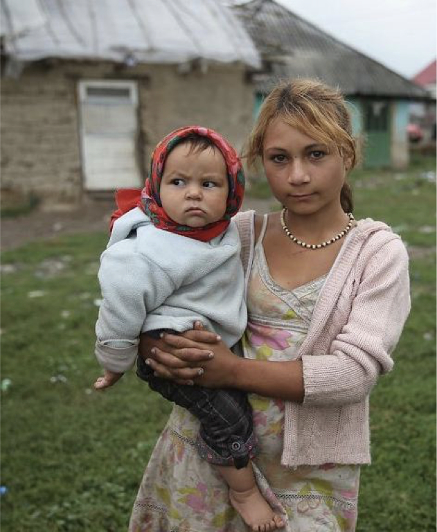

-2-MasterItem.svg)
are dealing with children who have different levels of development, experience
and ability even
within a play environment.
The Centre, then, becomes an integral part of the children's development and works to develop
cooperation with the children's school and with their parents. To make the
point; the Centre is not a
holding facility for children whose parents are at work. It is part of
children's development,
intellectually and socially. A far cry today from when Westminster started an
out-reach activity to
relieve pressure on working parents.
[ photos ]
Bob and Lorraine and children came to us in 1979 after Reid and Dorothy Vipond
moved east.
Following is material written in September of that year by Betty Halstead when
she was Vice Chair of the Board:
The Thompsons are both natives of Alberta. Bob earned an Education
degree in Calgary and then moved to St. Stephen’s College in Edmonton.
Here, two things affected the direction of his life: he completed his
Theological training and met Lorraine Lareome who was in nursing
training. They were married in the summer of 1966, and were placed in
their first pastorate in Morley, a small town between Calgary and Banff, to
serve a community of Stoney Indians for two years. At the end of the
assigned two years, the elders asked them to stay, but, since an Indian
minister originally from the reserve wished to return, they resigned.
As a result of an application to the United Church Board of World Missions,
to do missionary work somewhere in Asia, they were assigned to Japan.The first
two years were
spent in Tokyo studying the language and doing some counselling with an English
Church youth
group. In 1970 they were placed in a ‘new town’ area of 130,000 people. The town was a suburb of
Rev. Robert Thompson and Lorraine Thompson
